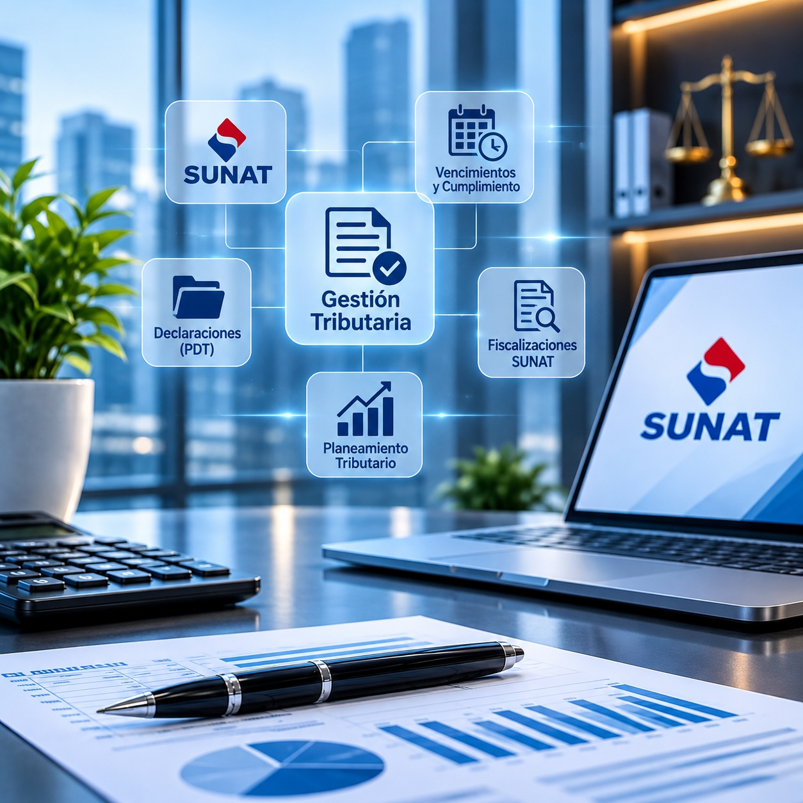

Salud y servicios médicos
Clínicas, centros médicos, consultorios, odontología y servicios relacionados con la salud humana.
Asesoría contable, tributaria, laboral y empresarial para que su empresa opere con información confiable y bajo control.
Años de experiencia respaldando a nuestros clientes
Más de 20 años de vigencia en el mercado.
Procesos ordenados que optimizan su tiempo.
Información confiable para gestionar mejor.
Obligaciones bajo seguimiento y a tiempo.
Somos un equipo multidisciplinario de profesionales de Contabilidad y Derecho, comprometidos con brindar la asesoría necesaria para una mejor toma de decisiones en la gestión de su negocio.

Servicios diseñados según el régimen, el tamaño y las necesidades de cada empresa.


Obligaciones laborales bajo control.
Planillas, PLAME, T-Registro, AFP y cumplimiento ante SUNAFIL.
Conocer más
Decisiones y respaldo legal.
Análisis financiero y soporte estratégico para una mejor toma de decisiones.
Conocer másConstitución de empresas y reorganización empresarial.
Conocer másPlaneamiento laboral, inspecciones y defensa legal socio-laboral.
Conocer másRegistro y protección de marcas, patentes y derechos de autor.
Conocer másExperiencia contable, tributaria y laboral en diversos sectores económicos.
En Florián Orchessi & Asociados brindamos soluciones contables, tributarias y laborales a empresas de diversos sectores económicos. Nuestra experiencia nos permite comprender las particularidades de cada actividad empresarial, ofreciendo asesoría especializada, cumplimiento normativo y herramientas orientadas a mejorar la gestión de cada negocio.
Clínicas, centros médicos, consultorios, odontología y servicios relacionados con la salud humana.
Empresas mayoristas y minoristas, ferreterías, materiales de construcción, alimentos, bebidas, combustibles, productos farmacéuticos y otros bienes.
Fabricación de estructuras metálicas, muebles, productos de metal, panaderías e industrias de transformación.
Transporte de carga por carretera, transporte terrestre de pasajeros y servicios relacionados con logística.
Constructoras, edificación, arquitectura, ingeniería y proyectos de infraestructura.
Restaurantes, bares, cantinas, hoteles, hospedajes y establecimientos turísticos.
Estudios contables, asesorías empresariales, servicios jurídicos, consultoría y actividades inmobiliarias.
Instituciones educativas, enseñanza primaria y educación superior.
Servicios informáticos, impresión, sistemas, tecnologías de información y telecomunicaciones.
Alquiler de maquinaria agrícola, equipos industriales y maquinaria especializada.
Tu empresa, nuestra experiencia.
Equipo multidisciplinario de contabilidad y derecho.
Soluciones según el régimen, tamaño y necesidades de cada empresa.
Herramientas que ordenan y agilizan la información.
Datos ordenados para gestionar y decidir con claridad.
Obligaciones tributarias y laborales bajo seguimiento.
Procesos que optimizan su tiempo y reducen costos administrativos.
Entendemos su empresa, su régimen y sus necesidades.
Definimos el plan de trabajo y las prioridades.
Ejecutamos con procesos ordenados y herramientas adecuadas.
Acompañamos y evaluamos de forma permanente.
Cuéntenos sobre su empresa y un consultor se pondrá en contacto con usted.
¿Eres estudiante o egresado de Contabilidad? Súmate a Florián Orchessi & Asociados para realizar tus prácticas o crecer con nosotros.
Acceda directamente a las principales plataformas e instituciones públicas relacionadas con el cumplimiento tributario, laboral, legal y administrativo de su empresa.
Administración tributaria nacional: RUC, declaración y pago de impuestos, comprobantes electrónicos y Clave SOL.
Sitio oficialRegistros públicos: inscripción de empresas y poderes, propiedad inmueble y vehicular, búsqueda de partidas.
Sitio oficialFiscalización del cumplimiento de la normativa sociolaboral y de seguridad y salud en el trabajo.
Sitio oficialCompetencia, protección al consumidor y propiedad intelectual: marcas, patentes y derechos de autor.
Sitio oficialNormativa laboral, promoción del empleo y trámites como el registro de la micro y pequeña empresa (REMYPE).
Sitio oficialSeguro social de salud: afiliación de trabajadores, aportaciones y prestaciones para el personal de su empresa.
Sitio oficialAdministración del Sistema Nacional de Pensiones: aportes y consultas previsionales.
Sitio oficialContrataciones con el Estado: registro de proveedores y normativa para empresas que venden al sector público.
Sitio oficialLos enlaces conducen a los sitios oficiales de cada entidad y se abren en una pestaña nueva.